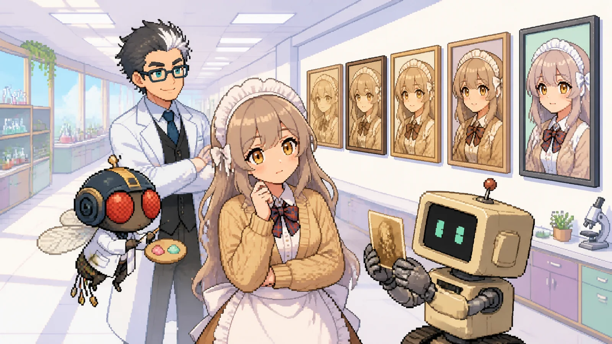
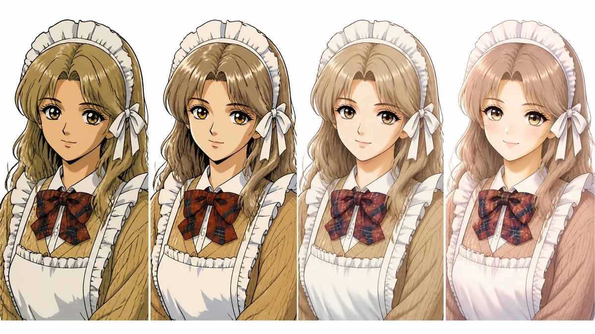
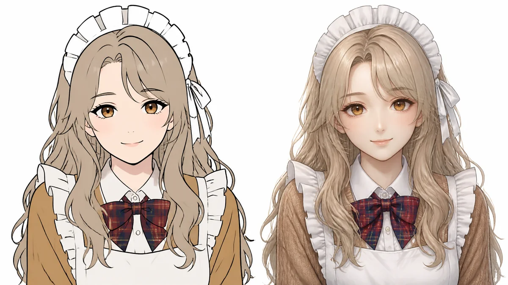
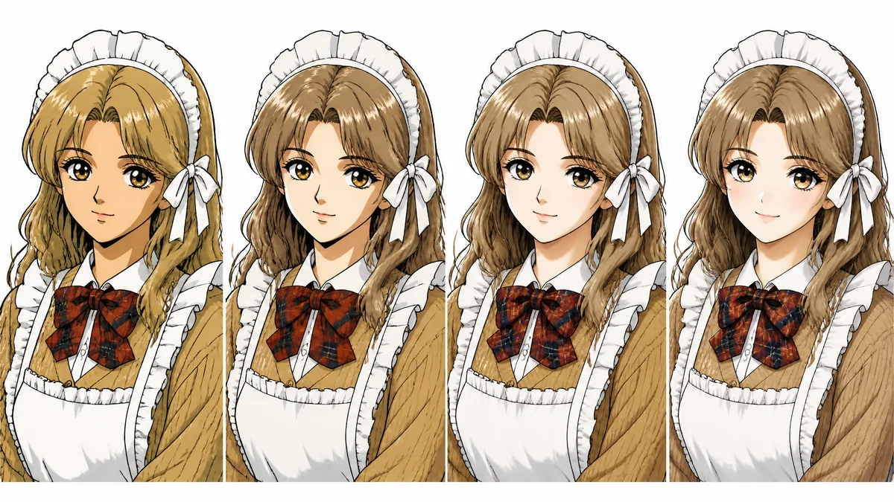
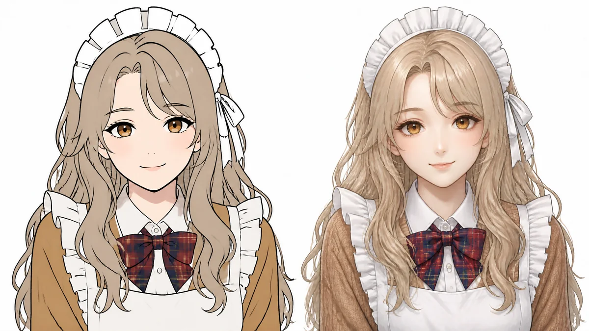
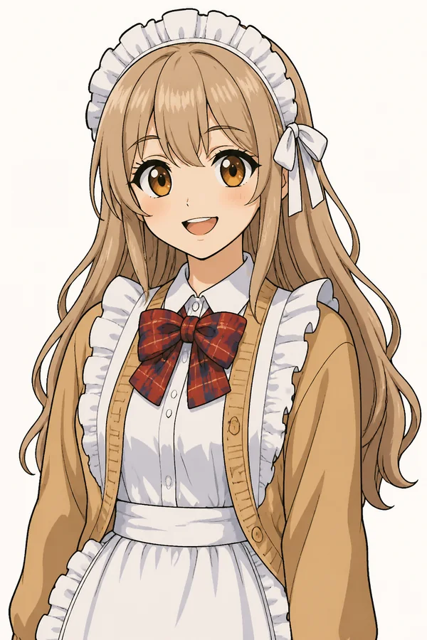

오늘의 과제

박사오늘은 시대 베리에이션이다. 같은 모아를 80년대부터 지금까지 옮겨 그려 보자. 무엇을 바꿔야 할까?

주판봇간단합니다! 색을 누렇게 바래게 하면 옛날 그림이 됩니다!

초파리 연구원그건 사진이 바랜 거지 화풍이 바뀐 게 아니야. 그림자 단계, 눈, 선의 양, 색감을 따로따로 돌려 보자.

모아제 얼굴이 네 가지 손잡이로 연대를 건너간다고요…?

모델은 모아입니다. 주판봇은 '옛날 느낌'을 내려고 색을 누렇게만 바꿉니다. 초파리는 그림자 단계, 눈, 선의 양, 색감을 하나씩 따로 바꿔 봅니다. 어느 쪽이 진짜 '그 시대'처럼 보일까요?
그림 실력·코드·수식을 몰라도 됩니다. 실험을 눌러 보며 따라오세요.
셀화는 그림자 경계가 또렷한 1~2단계, 디지털은 단계가 늘고 경계가 부드러워집니다

학교 수학으로 보면 — 곱셈 — 같은 개수씩 묶인 것을 셀 때 씁니다.
| 식 조각 | 뜻 |
|---|---|
| 부위 수 | 따로 칠하는 영역의 종류 |
| 그림자 단계 | 기본색보다 어두운 색이 몇 겹인가 |
| 하이라이트 단계 | 기본색보다 밝은 색이 몇 겹인가 |

같은 반 친구를 12색과 48색 크레파스로 각각 그려 보면, 12색 그림은 경계가 또렷하고 힘 있어 보이고 48색 그림은 부드럽고 정교해 보입니다.
리메이크 작품을 만들 때 원작의 그림자 단계 수를 먼저 정합니다. 원작이 1단계였는데 리메이크에서 3단계로 늘리면, 같은 디자인이어도 '요즘 그림'으로 보입니다.


그림자 1단계 + 또렷한 경계는 80~90년대 셀화의 인상, 2~3단계 + 부드러운 경계는 2010년대 이후 디지털 애니의 인상입니다.
같은 얼굴이어도 칠하는 방식만 바꾸면 연대가 움직입니다. 얼굴 모양은 그대로입니다.
작업에서는 '그림자 몇 단계, 경계는 또렷하게/부드럽게'를 먼저 정하고 색을 고릅니다.

AI에게 '80년대 애니 스타일'이라고 했더니 색은 누렇게 바랬는데 그림자는 부드러운 디지털 그대로입니다. 써도 될까요?
색감만 옛날이고 칠하는 방식은 지금이라 어색합니다. 'cel shading with one hard-edged shadow tone, no soft gradients'처럼 그림자 단계와 경계를 문장으로 적어 다시 요청하세요.
눈 크기, 하이라이트 개수, 속눈썹의 무게를 따로 돌리면 같은 얼굴이 다른 연대로 갑니다
졸업 앨범을 넘기면 연도마다 유행한 안경과 앞머리가 다릅니다. 얼굴은 같아도 눈 주변만 보고 연도를 맞힐 수 있습니다.
복고 콘셉트 일러스트에서는 눈 크기는 그대로 두고 하이라이트를 하나로 줄이고 속눈썹을 무겁게 그려 연대를 표시합니다. 눈을 키우지 않으니 캐릭터 나이가 흔들리지 않습니다.
하이라이트 1개 + 무거운 속눈썹은 80년대, 하이라이트 2~3개 + 가벼운 속눈썹은 지금의 인상입니다.
눈 크기를 130% 넘게 키우면 연대보다 나이가 먼저 바뀌어 보입니다. 연대는 반짝임과 속눈썹으로 고르세요.
작업에서는 눈 크기를 캐릭터 고정값으로 두고, 하이라이트와 속눈썹만 연대별로 바꿉니다.
'90년대 애니처럼'을 넣었더니 눈이 아주 커지고 얼굴이 어려졌습니다. 괜찮을까요?
연대 대신 나이가 바뀐 것입니다. 'same eye size as the reference, one large eye highlight, heavier upper lashes, adult woman in her twenties'처럼 눈 크기는 고정하고 반짝임만 바꾸도록 적으세요.
머리카락 가닥 선, 옷 주름 선의 개수가 '정보량'입니다. 많을수록 정교해 보이지만 움직이는 그림에서는 그리는 양이 함께 늘어납니다
학교 수학으로 보면 — 곱셈과 비례 — 한쪽을 두 배로 하면 결과도 두 배입니다.
| 식 조각 | 뜻 |
|---|---|
| 1초의 장수 | 애니메이션은 흔히 1초 24장 중 같은 그림을 두 번씩 써서 12장 |
| 장마다 선 개수 | 정보량 |
| 결과 | 그리는 양 — 정보량을 두 배로 하면 그리는 양도 두 배 |
공책 필기를 깔끔하게 하려고 밑줄과 장식을 많이 넣으면 한 쪽은 예쁘지만 열 쪽을 쓰기는 힘듭니다.
애니메이션 캐릭터 설정에서는 '머리카락 가닥 선은 몇 개까지'처럼 정보량 상한을 정해 둡니다. 포스터용 일러스트는 같은 캐릭터를 선을 두세 배로 늘려 따로 그립니다.
가닥 선이 적으면 가볍고 단순한 화면, 많으면 정교하고 무거운 화면이 됩니다. 연대마다 쓰는 양이 달라 연대의 인상도 함께 바뀝니다.
선 굵기가 굵으면 단순한 쪽, 가늘면 정교한 쪽으로 보입니다. 같은 정보량이어도 굵기로 인상을 바꿀 수 있습니다.
작업에서는 그림의 쓰임(정지·움직임)을 먼저 정하고 정보량 상한을 정합니다.

AI가 TV 애니 장면용 캐릭터를 선이 아주 많은 정교한 그림으로 줬습니다. 그대로 장면마다 쓸 수 있을까요?
한 장으로는 좋지만, 장면마다 같은 양을 맞추기 어렵고 장마다 선 모양이 달라져 흔들려 보입니다. 'simple TV anime line art, few hair strand lines'처럼 정보량을 적어 다시 받으세요.
밝기·채도·색상 회전을 바꾸면, 선과 그림자는 그대로인데 연대와 계절이 움직입니다
옛날 앨범 사진은 빛이 바래 노랗고, 지금 휴대전화 사진은 파랗고 선명합니다. 찍힌 사람은 같아도 연도가 달라 보입니다.
오래된 셀화를 다시 낼 때는 원판과 보정판의 색을 나란히 놓고, 피부색과 머리색이 원래 설정에서 벗어나지 않는지 검수합니다. 보정이 지나치면 캐릭터 고정값(머리색)이 바뀝니다.
채도를 낮추고 노란 기를 더하면 오래된 인쇄물, 채도를 높이고 파란 쪽으로 돌리면 지금의 화면 인상입니다.
색상 회전이 30도를 넘으면 머리색 같은 고정값이 바뀌어 보이기 시작합니다. 이 실험에서는 30도까지를 '같은 캐릭터'로 봅니다.
작업에서는 그림자 단계·눈·정보량으로 연대를 정하고, 색보정은 그 위에 마지막으로 얹습니다.
AI가 준 레트로풍 그림이 머리색까지 갈색으로 바뀌었습니다. 분위기는 좋은데 써도 될까요?
머리색은 캐릭터 고정값입니다. 'keep her hair color exactly as in the reference, only warm faded film grading'처럼 고정값을 지키라고 적고, 색감은 전체 보정으로만 바꾸게 하세요.
이 부에서 배운 원리를 그림 생성 AI(Genspark 등)로 직접 확인합니다. A는 이 페이지 그림을 실제로 만든 프롬프트, B는 원리를 하나 빼거나 바꾼 비교용 문장입니다.
참고 그림 내려받기: haru_anime_base · sia_anime_base · moa_anime_base · haru_sheet · sia_sheet · moa_sheet · doctor_sheet · fruitfly_sprites_6 · jupanbot_ref_genspark_v0 · pixel_style_ref_prev_cover
그림자 단계·눈·선·색감을 연대마다 다르게 적어, 같은 사람이 연대를 건너가는지 확인합니다.
첨부: moa·sia·haru anime_base와 sheet
Illustration, wide 16:9. Art style: four panels from left to right: (1) 1980s-like cel animation look — one hard-edged shadow tone, one small round eye highlight, heavy upper lashes, thick outlines, warm slightly faded colors; (2) 1990s-like look — two hard shadow tones, sharper chin, glossy hair highlights; (3) 2000s-like early digital look — clean thin lines, soft airbrushed shading; (4) present-day anime look — large eyes with several highlights, soft gradient shading, bright crisp colors Match the attached reference images exactly for identity (hair shape and color, eye color, accessories). All characters are adults in their twenties (the Professor is an adult man in his thirties); modest outfits exactly as described. Only the drawing style changes between panels; the person stays the same. Four chest-up portraits of the same Moa (adult maid intern, long ash-beige wavy hair, white frilled maid headband with a white ribbon over her LEFT ear, amber eyes), wearing camel knit cardigan over a white blouse, red and navy plaid bow tie, white frilled apron, side by side in a row, gentle smile, same pose and framing in all four. Plain white background behind the panels. No text, no letters, no numbers, no calligraphy, no seals or stamps, no logos, no watermark, no revealing clothing, not childlike, no school uniform, not resembling any existing anime, comic or game character, do not imitate any specific artist or studio.
Same image, keep the same framing. Change only: make all four panels use the same present-day anime shading and eyes; only change the color grading from warm faded (left) to bright crisp (right). Still no text.

실제 결과: A는 네 연대가 선·그림자·색까지 분명히 달랐습니다. B는 '색감만 바꾸라'고 했지만 선과 그림자 차이가 그대로 남아 A와 거의 같았습니다. 같은 대화에서는 도구가 앞 그림을 지키려 해 차이가 약하게 나옵니다.
같은 대화에서 차이가 약하면 새 대화에서 처음부터 만들어 보세요. 작은 변화는 도구가 원래 모양을 지키려 해 약하게 나오는 일이 많습니다.
같은 모아를 가닥 선이 적은 그림과 많은 그림으로 만들어 정보량의 차이를 봅니다.
첨부: moa·sia·haru anime_base와 sheet
Illustration, wide 16:9. Art style: left: simple TV-animation line art with thick outlines and only a few hair strand lines; right: detailed feature-film illustration with many fine hair strand lines and fabric fold lines, thinner outlines Match the attached reference images exactly for identity (hair shape and color, eye color, accessories). All characters are adults in their twenties (the Professor is an adult man in his thirties); modest outfits exactly as described. Only the drawing style changes between panels; the person stays the same. Two chest-up portraits of the same Moa (adult maid intern, long ash-beige wavy hair, white frilled maid headband with a white ribbon over her LEFT ear, amber eyes), wearing camel knit cardigan over a white blouse, red and navy plaid bow tie, white frilled apron, same pose, side by side. Plain white background behind the panels. No text, no letters, no numbers, no calligraphy, no seals or stamps, no logos, no watermark, no revealing clothing, not childlike, no school uniform, not resembling any existing anime, comic or game character, do not imitate any specific artist or studio.
Same image, keep the same framing. Change only: give both panels the same medium amount of hair strand lines and the same line thickness. Still no text.

실제 결과: A는 단순한 장과 정교한 장이 분명히 달랐고, B는 A와 거의 같았습니다(달라지지 않음).
같은 대화에서 차이가 약하면 새 대화에서 처음부터 만들어 보세요. 작은 변화는 도구가 원래 모양을 지키려 해 약하게 나오는 일이 많습니다.
이 부의 원리를 내 손으로 프롬프트에 옮겨 보는 과제 두 개입니다. 과제마다 목표 → 순서 → 넣을 프롬프트 → 확인할 것 → 예상 결과 → 자주 생기는 문제 순서로 적었습니다. 예상 결과 그림은 아래 프롬프트로 실제로 만든 그림입니다. 요청과 다르게 나온 곳은 '실제 결과'에 그대로 적었습니다. 결과는 매번 조금씩 다르니, 그림이 똑같지 않아도 '확인할 것'이 맞으면 성공입니다.
목표연대 이름 대신 그림자 단계·눈·선·색감 네 줄로 80년대 셀화 느낌을 적어, 모아를 한 장 만들고 네 손잡이가 모두 반영됐는지 검사합니다.
왜 이 연습인가'80s anime style' 한 마디로 요청하면 색만 바래고 칠하는 방식은 지금 그대로인 그림이 자주 나옵니다(1부 4단계). 특징을 한 줄씩 적으면 어느 손잡이가 빠졌는지 바로 보입니다.
첨부할 참고 그림: refs/moa_anime_base.png, refs/moa_sheet.png — 참고 그림은 위 직접 만들어 보기에서 내려받을 수 있습니다.
Illustration, vertical 2:3. Art style: retro cel animation look described by features only: one hard-edged shadow tone, one small round eye highlight, heavy upper lashes, thick even outlines, warm slightly faded colors Match the attached reference images exactly for identity (hair shape and color, eye color, accessories). All characters are adults in their twenties (the Professor is an adult man in his thirties); modest outfits exactly as described. Only the drawing style changes between panels; the person stays the same. Chest-up portrait of Moa (adult maid intern, long ash-beige wavy hair, white frilled maid headband with a white ribbon over her LEFT ear, amber eyes), wearing camel knit cardigan over a white blouse, red and navy plaid bow tie, white frilled apron, gentle smile, looking at the viewer. Plain white background. No text, no letters, no numbers, no calligraphy, no seals or stamps, no logos, no watermark, no revealing clothing, not childlike, no school uniform, not resembling any existing anime, comic or game character, do not imitate any specific artist or studio.

실제 결과: 실패에 가까움. 특징 네 줄을 넣었지만 그림자 1단계·하이라이트 1개·굵은 선이 지켜지지 않고 지금의 애니풍으로 나왔습니다. 같은 대화에 'one hard-edged shadow tone, one eye highlight' 한 줄만 다시 넣거나, 1부 본문 그림(p1_moa_era_grid)처럼 여러 연대를 한 장에 나란히 요청하면 차이가 더 잘 나옵니다.
| 문제 | 이렇게 고칩니다 |
|---|---|
| 색만 바래고 그림자는 부드럽다 | 'Same image. Change only: one hard-edged shadow tone, no soft gradients.' |
| 눈이 커지고 어려 보인다 | 'same eye size as the reference, adult woman in her twenties'를 덧붙입니다. |
| 머리띠가 사라졌다 | 고정값부터 다시 적습니다(7부 f1). |
더 해 보기같은 네 줄의 값을 바꿔 '90년대풍'(그림자 2단계, 날카로운 턱, 머리 광택)으로도 만들어 비교해 보세요.
| 항목 | 주판봇 | 초파리 |
|---|---|---|
| 닮음(같은 모아로 보이나) | 7 | 9 |
| 원리(연대 손잡이를 썼나) | 3 | 9 |
| 자연스러움 | 5 | 8 |
| 합계 | 15 | 26 |


점수는 이야기 속 예시입니다. 실제 그림을 평가한 값이 아닙니다.
| 주제 | 한 줄 | 작업에서는 |
|---|---|---|
| 그림자 단계 | 셀화는 1~2단계·또렷한 경계, 디지털은 여러 단계·부드러운 경계 | 그림자 단계와 경계를 문장에 적는다 |
| 눈 | 하이라이트 개수와 속눈썹 무게로 연대를 고른다 | 눈 크기는 고정값으로 둔다 |
| 정보량 | 선 개수가 정교함과 그리는 양을 함께 정한다 | 쓰임에 맞춰 상한을 정한다 |
| 색보정 | 마지막 손잡이. 30도 넘게 돌리면 고정값이 흔들린다 | 고정값은 지키라고 적는다 |

이 페이지에 나온 개념·방법·비유·쓰임을 모았습니다. 검색하고, "설명 보러 가기"로 본문에 돌아갑니다.
지식 색인을 출처와 함께 파일로 내려받습니다. 서지 관리는 BibTeX·RIS, 온톨로지 편집은 Turtle, 그래프 도구는 CSV, 여러 페이지 합치기는 kg.json입니다.